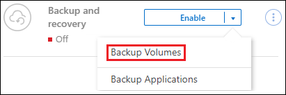
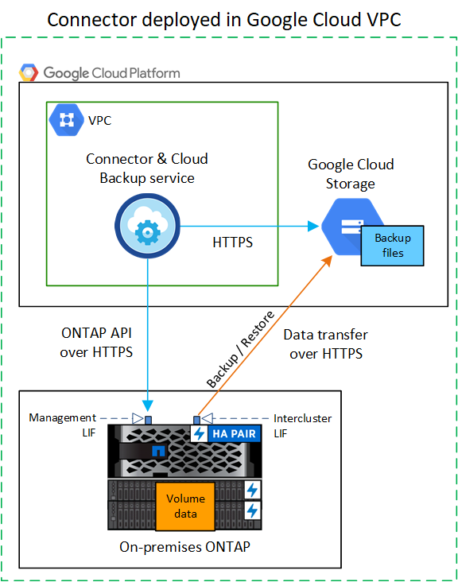
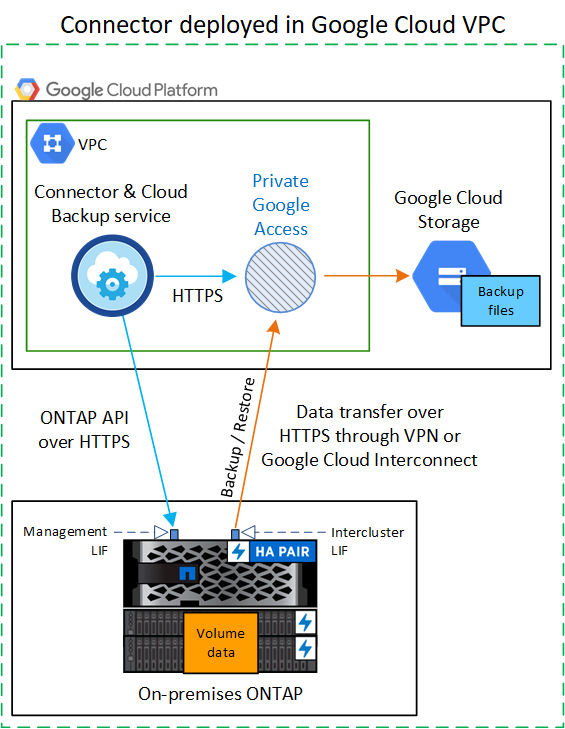
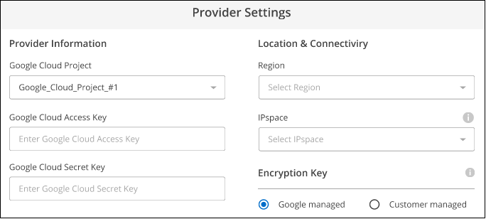
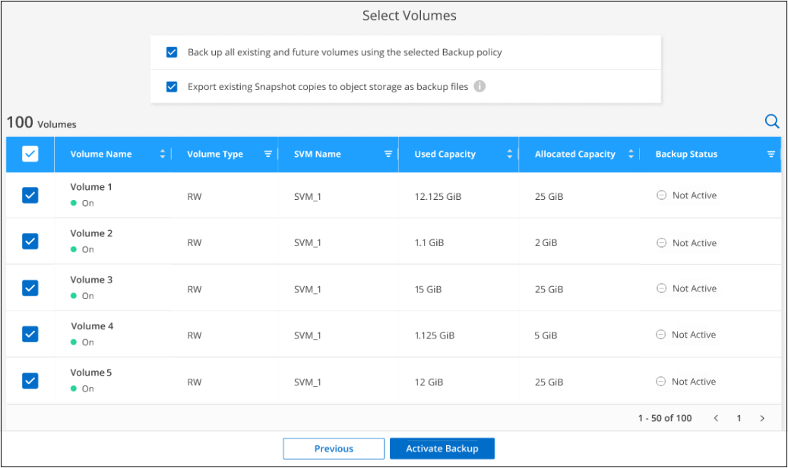

Amazon Web Services
Amazon Web Services
 Google Cloud
Google Cloud
 Microsoft Azure
Microsoft Azure
 Dokumentationsänderungen beantragen
Dokumentationsänderungen beantragen In GitHub bearbeiten
In GitHub bearbeiten Leitfaden für Beitragende
Leitfaden für BeitragendeSichern von lokalen ONTAP-Daten auf Google Cloud Storage
Beitragende
Unternehmen Sie einige Schritte, um den Backup von Daten von lokalen ONTAP Systemen auf Google Cloud Storage zu starten.
Zu beachten ist, dass „On-Premises ONTAP Systeme“ FAS, AFF und ONTAP Select Systeme umfassen.
Schnellstart
Führen Sie diese Schritte schnell durch, oder scrollen Sie nach unten zu den verbleibenden Abschnitten, um ausführliche Informationen zu erhalten.
 Überprüfen Sie die Unterstützung Ihrer Konfiguration
Überprüfen Sie die Unterstützung Ihrer Konfiguration-
Sie haben den lokalen Cluster erkannt und zu einer Arbeitsumgebung in BlueXP hinzugefügt. Siehe "Erkennung von ONTAP Clustern" Entsprechende Details.
-
Auf dem Cluster läuft ONTAP 9.7P5 oder höher.
-
Das Cluster verfügt über eine SnapMirror Lizenz – es ist im Premium Bundle oder in der Datensicherungs-Bundle enthalten.
-
Der Cluster muss über die erforderlichen Netzwerkverbindungen zum Google-Speicher und zum Connector verfügen.
-
-
Der Connector muss über die erforderlichen Netzwerkverbindungen zum Google-Speicher und zum Cluster verfügen.
-
Sie haben ein gültiges Google-Abonnement für den Objektspeicherplatz, in dem sich Ihre Backups befinden.
-
Sie verfügen über ein Google-Konto mit einem Zugriffsschlüssel und einem geheimen Schlüssel, damit der ONTAP-Cluster Daten sichern und wiederherstellen kann.
 Aktivieren Sie Cloud Backup auf dem System
Aktivieren Sie Cloud Backup auf dem SystemWählen Sie die Arbeitsumgebung aus und klicken Sie auf Aktivieren > Backup Volumes neben dem Backup- und Recovery-Dienst im rechten Fenster, und folgen Sie dann dem Setup-Assistenten.

 Wählen Sie den Cloud-Provider aus, und geben Sie die Provider-Details ein
Wählen Sie den Cloud-Provider aus, und geben Sie die Provider-Details einWählen Sie Google Cloud als Anbieter aus, und geben Sie dann die Provider-Details ein. Sie müssen außerdem den IPspace im ONTAP Cluster angeben, auf dem sich die Volumes befinden.
 Legen Sie die standardmäßige Backup-Richtlinie fest
Legen Sie die standardmäßige Backup-Richtlinie festDie Standardrichtlinie sichert Volumes täglich und speichert die letzten 30 Backup-Kopien jedes Volumes. Änderung zu stündlichen, täglichen, wöchentlichen, monatlichen oder jährlichen Backups Oder wählen Sie eine der systemdefinierten Richtlinien aus, die mehr Optionen bieten. Sie können auch die Anzahl der zu behaltenden Backup-Kopien ändern.
Backups werden standardmäßig im Standard-Storage gespeichert. Falls in Ihrem Cluster ONTAP 9.12.1 oder höher verwendet wird, können Sie das Tiering von Backups nach einer bestimmten Anzahl von Tagen auf Google Archive Storage festlegen, um die Kosten weiter zu optimieren. "Weitere Informationen über die verfügbaren Konfigurationseinstellungen für Cloud Backup-Richtlinien".

 Wählen Sie die Volumes aus, die Sie sichern möchten
Wählen Sie die Volumes aus, die Sie sichern möchtenLegen Sie auf der Seite Volumes auswählen fest, welche Volumes gesichert werden sollen. Verwenden Sie dazu die Standard-Backup-Richtlinie. Um bestimmten Volumes unterschiedliche Backup-Richtlinien zuzuweisen, können Sie weitere Richtlinien erstellen und diese später auf Volumes anwenden.
Anforderungen
Lesen Sie die folgenden Anforderungen, um sicherzustellen, dass Sie über eine unterstützte Konfiguration verfügen, bevor Sie mit dem Backup von On-Premises-Volumes in Google Cloud Storage beginnen.
Bei der Konfiguration von Backups von lokalen ONTAP Systemen in Google Cloud Storage stehen zwei Verbindungsmethoden zur Verfügung.
-
Öffentliche Verbindung: Über einen öffentlichen Google-Endpunkt wird das ONTAP-System direkt mit Google Cloud-Storage verbunden.
-
Private Verbindung: Verwenden Sie ein VPN oder Google Cloud Interconnect und leiten Sie den Datenverkehr über eine private Google Access-Schnittstelle, die eine private IP-Adresse verwendet.
Das folgende Diagramm zeigt die Methode Public Connection und die Verbindungen, die Sie zwischen den Komponenten vorbereiten müssen. Der Connector muss in der Google Cloud Platform VPC implementiert werden.

Das folgende Diagramm zeigt die Methode private Verbindung und die Verbindungen, die Sie zwischen den Komponenten vorbereiten müssen. Der Connector muss in der Google Cloud Platform VPC implementiert werden.

Vorbereiten der ONTAP Cluster
Bevor Sie mit dem Backup von Volume-Daten beginnen können, müssen Sie die ONTAP Cluster vor Ort in BlueXP ermitteln.
- ONTAP-Anforderungen erfüllt
-
-
Minimum ONTAP 9.7P5; ONTAP 9.8P13 und höher wird empfohlen.
-
SnapMirror Lizenz (im Rahmen des Premium Bundle oder Datensicherungs-Bundles enthalten)
Hinweis: bei der Verwendung von Cloud Backup ist das „Hybrid Cloud Bundle“ nicht erforderlich.
Informieren Sie sich darüber "Management Ihrer Cluster-Lizenzen".
-
Zeit und Zeitzone sind korrekt eingestellt.
Informieren Sie sich darüber "Konfigurieren Sie die Cluster-Zeit".
-
- Netzwerkanforderungen für Cluster
-
-
Das ONTAP Cluster initiiert eine HTTPS-Verbindung über Port 443 von der Intercluster-LIF zu Google Cloud Storage für Backup- und Restore-Vorgänge.
ONTAP liest und schreibt Daten auf und aus dem Objekt-Storage. Objekt-Storage startet nie, er reagiert einfach nur.
-
ONTAP erfordert eine eingehende Verbindung vom Connector zur Cluster-Management-LIF. Der Connector kann in einer Google Cloud Platform VPC residieren.
-
Auf jedem ONTAP Node ist eine Intercluster-LIF erforderlich, die die Volumes hostet, die Sie sichern möchten. Die LIF muss dem IPspace zugewiesen sein, den ONTAP zur Verbindung mit Objekt-Storage verwenden sollte. "Erfahren Sie mehr über IPspaces".
Wenn Sie Cloud Backup einrichten, werden Sie aufgefordert, den IP-Speicherplatz zu verwenden. Sie sollten den IPspace auswählen, dem jede LIF zugeordnet ist. Dies kann der „Standard“-IPspace oder ein benutzerdefinierter IPspace sein, den Sie erstellt haben.
-
Die Intercluster-LIFs der Nodes können auf den Objektspeicher zugreifen.
-
DNS-Server wurden für die Storage-VM konfiguriert, auf der sich die Volumes befinden. Informieren Sie sich darüber "Konfigurieren Sie DNS-Services für die SVM".
Wenn Sie privaten Google Access oder Private Service Connect verwenden, stellen Sie sicher, dass Ihre DNS-Server so konfiguriert wurden, dass sie auf Punkt storage.googleapis.com auf die richtige interne (private) IP-Adresse verweisen.
-
Wenn Sie einen anderen IPspace als den Standard verwenden, müssen Sie möglicherweise eine statische Route erstellen, um Zugriff auf den Objekt-Storage zu erhalten.
-
Aktualisieren Sie ggf. Firewall-Regeln, um Cloud Backup Service-Verbindungen von ONTAP zu Objektspeicher über Port 443 und Datenverkehr zur Namensauflösung von der Storage VM zum DNS-Server über Port 53 (TCP/UDP) zu ermöglichen.
-
Erstellen oder Umschalten von Anschlüssen
Wenn Sie bereits einen Connector in Ihrer Google Cloud Platform VPC implementiert haben, sind Sie alle festgelegt. Falls nicht, müssen Sie an diesem Standort einen Connector erstellen, um ONTAP Daten in Google Cloud Storage zu sichern. Es kann kein Connector verwendet werden, der bei einem anderen Cloud-Provider oder vor Ort implementiert wird.
Vorbereiten der Vernetzung für den Connector
Stellen Sie sicher, dass der Connector über die erforderlichen Netzwerkverbindungen verfügt.
-
Stellen Sie sicher, dass das Netzwerk, in dem der Connector installiert ist, folgende Verbindungen ermöglicht:
-
Eine ausgehende Internetverbindung zum Cloud Backup Service über Port 443 (HTTPS)
-
Eine HTTPS-Verbindung über Port 443 zu Ihrem Google Cloud-Speicher
-
Eine HTTPS-Verbindung über Port 443 an Ihre ONTAP-Cluster-Management-LIF
-
-
Aktivieren Sie den privaten Google-Zugang (oder Private Service Connect) im Subnetz, in dem Sie den Connector bereitstellen möchten. "Privater Zugriff Auf Google" Oder "Private Service Connect" Sind erforderlich, wenn Sie eine direkte Verbindung von Ihrem ONTAP Cluster zur VPC haben und Sie die Kommunikation zwischen dem Connector und Google Cloud Storage in Ihrem virtuellen privaten Netzwerk (eine private Verbindung) wünschen.
Befolgen Sie die Anweisungen von Google, um diese privaten Zugangsoptionen einzurichten. Stellen Sie sicher, dass Ihre DNS-Server so konfiguriert wurden, dass sie Punkt www.googleapis.com und storage.googleapis.com auf die korrekten internen (privaten) IP-Adressen verweisen.
Überprüfen oder Hinzufügen von Berechtigungen zum Konnektor
Um die Cloud Backup Funktion „Search & Restore“ nutzen zu können, benötigen Sie spezielle Berechtigungen in der Rolle für den Connector, damit er auf den Google Cloud BigQuery Service zugreifen kann. Lesen Sie die unten stehenden Berechtigungen, und befolgen Sie die Schritte, wenn Sie die Richtlinie ändern müssen.
-
In "Cloud Console", Gehen Sie zur Seite Rollen.
-
Wählen Sie in der Dropdown-Liste oben auf der Seite das Projekt oder die Organisation aus, das die Rolle enthält, die Sie bearbeiten möchten.
-
Klicken Sie auf eine benutzerdefinierte Rolle.
-
Klicken Sie auf Rolle bearbeiten, um die Berechtigungen der Rolle zu aktualisieren.
-
Klicken Sie auf Berechtigungen hinzufügen, um der Rolle folgende neue Berechtigungen hinzuzufügen.
bigquery.jobs.get bigquery.jobs.list bigquery.jobs.listAll bigquery.datasets.create bigquery.datasets.get bigquery.jobs.create bigquery.tables.get bigquery.tables.getData bigquery.tables.list bigquery.tables.create -
Klicken Sie auf Aktualisieren, um die bearbeitete Rolle zu speichern.
Lizenzanforderungen prüfen
-
Bevor Sie Cloud Backup für Ihren Cluster aktivieren können, müssen Sie entweder ein „Pay-as-you-go“-Angebot (PAYGO) mit BlueXP Marketplace von Google abonnieren oder eine Cloud Backup BYOL-Lizenz von NetApp erwerben und aktivieren. Diese Lizenzen sind für Ihr Konto und können für mehrere Systeme verwendet werden.
-
Für die Cloud Backup-PAYGO-Lizenzierung benötigen Sie ein Abonnement für den "Google" BlueXP Marketplace Angebot zur Nutzung von Cloud Backup. Die Abrechnung für Cloud Backup erfolgt über dieses Abonnement.
-
Für die BYOL-Lizenzierung von Cloud Backup benötigen Sie die Seriennummer von NetApp, mit der Sie den Service für die Dauer und die Kapazität der Lizenz nutzen können. "Erfahren Sie, wie Sie Ihre BYOL-Lizenzen managen".
-
-
Sie benötigen ein Google-Abonnement für den Objekt-Speicherplatz, in dem Ihre Backups gespeichert werden.
Backups von On-Premises-Systemen in Google Cloud Storage lassen sich in allen Regionen erstellen "Wobei Cloud Volumes ONTAP unterstützt wird". Sie geben die Region an, in der Backups beim Einrichten des Dienstes gespeichert werden sollen.
Google Cloud Storage wird für Backups vorbereitet
Wenn Sie ein Backup einrichten, müssen Sie Speicherzugriffsschlüssel für ein Servicekonto mit Storage Admin-Berechtigungen bereitstellen. Mithilfe eines Service-Kontos kann Cloud Backup zum Speichern von Backups Cloud-Storage-Buckets authentifizieren und auf diese zugreifen. Die Schlüssel sind erforderlich, damit Google Cloud Storage weiß, wer die Anfrage stellt.
-
"Erstellen Sie ein Servicekonto mit der vordefinierten Rolle „Storage Admin“".
-
Gehen Sie zu "GCP-Speichereinstellungen" Außerdem Zugriffsschlüssel für das Servicekonto erstellen:
-
Wählen Sie ein Projekt aus, und klicken Sie auf Interoperabilität. Falls Sie dies noch nicht getan haben, klicken Sie auf Interoperabilitätszugriff aktivieren.
-
Klicken Sie unter Zugriffsschlüssel für Servicekonten auf Schlüssel für ein Servicekonto erstellen, wählen Sie das gerade erstellte Servicekonto aus und klicken Sie auf Schlüssel erstellen.
Wenn Sie den Backup-Service konfigurieren, müssen Sie die Schlüssel später in Cloud Backup eingeben.
-
Unterstützung Von Cloud Backup
Cloud Backup kann jederzeit direkt aus der lokalen Arbeitsumgebung aktiviert werden.
-
Wählen Sie in der Arbeitsfläche die Arbeitsumgebung aus und klicken Sie auf Aktivieren > Backup Volumes neben dem Backup- und Recovery-Service im rechten Fenster.
Wenn das Ziel von Google Cloud Storage für Ihre Backups als Arbeitsumgebung auf dem Canvas existiert, können Sie den Cluster auf die Google Cloud Storage Arbeitsumgebung ziehen, um den Setup-Assistenten zu starten.
-
Wählen Sie Google Cloud als Anbieter und klicken Sie auf Weiter.
-
Geben Sie die Provider-Daten ein und klicken Sie auf Weiter.
-
Das Google Cloud Projekt, an dem der Google Cloud Storage Bucket für Backups erstellt werden soll. (Das Projekt muss über ein Service-Konto verfügen, das über die vordefinierte Rolle „Storage Admin“ verfügt.)
-
Der Google-Zugriffsschlüssel und der geheime Schlüssel zum Speichern der Backups.
-
Der Google-Bereich, in dem die Backups gespeichert werden.
-
Der IPspace im ONTAP Cluster, in dem sich die Volumes, die Sie sichern möchten, befinden. Die Intercluster-LIFs für diesen IPspace müssen über Outbound-Internetzugang verfügen.

-
-
Wenn Sie für Ihr Konto keine Lizenz für Cloud Backup besitzen, werden Sie zu diesem Zeitpunkt aufgefordert, die gewünschte Gebührenart auszuwählen. Sie können ein Pay-as-you-go (PAYGO) Marketplace-Angebot von BlueXP bei Google abonnieren (oder bei mehreren Abonnements eine auswählen) oder eine Cloud Backup BYOL-Lizenz von NetApp erwerben und aktivieren. "Erfahren Sie, wie Sie Cloud Backup-Lizenzen einrichten."
-
Geben Sie die Backup Policy Details ein, die für Ihre Standard Policy verwendet werden, und klicken Sie auf Weiter. Sie können eine vorhandene Richtlinie auswählen oder eine neue Richtlinie erstellen, indem Sie in den einzelnen Abschnitten Ihre Auswahl eingeben:
-
Geben Sie den Namen für die Standardrichtlinie ein. Sie müssen den Namen nicht ändern.
-
Legen Sie den Backup-Zeitplan fest und wählen Sie die Anzahl der zu behaltenden Backups aus. "Die Liste der vorhandenen Richtlinien, die Sie auswählen können, wird angezeigt".
-
Bei Verwendung von ONTAP 9.12.1 oder neuer können Sie Backups nach einer bestimmten Anzahl von Tagen im Archiv-Storage Tiering zuweisen, um die Kosten weiter zu optimieren. "Weitere Informationen über die verfügbaren Konfigurationseinstellungen für Cloud Backup-Richtlinien".
-
-
Wählen Sie auf der Seite Volumes auswählen die Volumes aus, für die ein Backup mit der definierten Backup-Richtlinie gesichert werden soll. Falls Sie bestimmten Volumes unterschiedliche Backup-Richtlinien zuweisen möchten, können Sie später zusätzliche Richtlinien erstellen und auf diese Volumes anwenden.
-
Um alle bestehenden Volumes und Volumes zu sichern, die in der Zukunft hinzugefügt wurden, markieren Sie das Kontrollkästchen „Alle bestehenden und zukünftigen Volumen sichern…“. Wir empfehlen diese Option, damit alle Ihre Volumes gesichert werden und Sie nie vergessen müssen, Backups für neue Volumes zu aktivieren.
-
Um nur vorhandene Volumes zu sichern, aktivieren Sie das Kontrollkästchen in der Titelzeile (
 ).
). -
Um einzelne Volumes zu sichern, aktivieren Sie das Kontrollkästchen für jedes Volume (
 ).
).
-
Wenn es lokale Snapshot-Kopien für Lese-/Schreib-Volumes in dieser Arbeitsumgebung gibt, die dem Backup-Schedule-Label entsprechen, das Sie gerade für diese Arbeitsumgebung ausgewählt haben (z. B. täglich, wöchentlich usw.), wird eine zusätzliche Eingabeaufforderung angezeigt: „Export vorhandener Snapshot Kopien in Objekt-Storage als Backup-Kopien“. Aktivieren Sie dieses Kontrollkästchen, wenn alle historischen Snapshots als Backup-Dateien in Objekt-Storage kopiert werden sollen, um sicherzustellen, dass die umfassendste Sicherung für Ihre Volumes gewährleistet ist.
-
-
Klicken Sie auf Activate Backup und Cloud Backup beginnt mit der Erstellung der ersten Backups Ihrer Volumes.
Ein Google Cloud Storage-Bucket wird automatisch in dem Servicekonto erstellt, das durch den von Ihnen eingegebenen Zugriffsschlüssel und den geheimen Schlüssel von Google angegeben wird und die Backup-Dateien dort gespeichert sind. Das Dashboard für Volume Backup wird angezeigt, sodass Sie den Status der Backups überwachen können. Sie können den Status von Backup- und Wiederherstellungsjobs auch mit dem überwachen "Fenster Job-Überwachung".
Was kommt als Nächstes?
-
Das können Sie "Management von Backup Files und Backup-Richtlinien". Dies umfasst das Starten und Stoppen von Backups, das Löschen von Backups, das Hinzufügen und Ändern des Backup-Zeitplans und vieles mehr.
-
Das können Sie "Management von Backup-Einstellungen auf Cluster-Ebene". Dies umfasst die Änderung der Storage-Schlüssel, die ONTAP für den Zugriff auf den Cloud-Storage verwendet, die Änderung der verfügbaren Netzwerkbandbreite für das Hochladen von Backups in den Objekt-Storage, die Änderung der automatischen Backup-Einstellung für zukünftige Volumes und vieles mehr.
-
Das können Sie auch "Wiederherstellung von Volumes, Ordnern oder einzelnen Dateien aus einer Sicherungsdatei" Einem Cloud Volumes ONTAP System in Google oder einem lokalen ONTAP System übertragen.